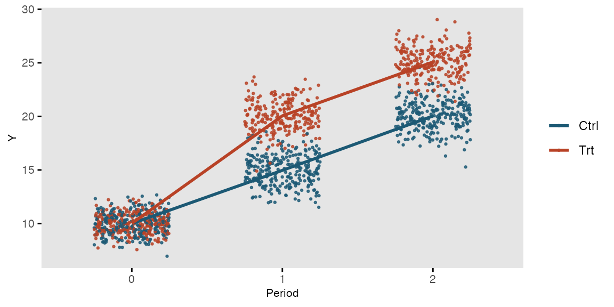

To simulate longitudinal data, we start with a ‘cross-sectional’ data set and convert it to a time-dependent data set. The original cross-sectional data set may or may not include time-dependent data in the columns. In the next example, we measure outcome Y once before and twice after intervention T in a randomized trial:
tdef <- defData(varname = "T", dist = "binary", formula = 0.5)
tdef <- defData(tdef, varname = "Y0", dist = "normal", formula = 10, variance = 1)
tdef <- defData(tdef, varname = "Y1", dist = "normal", formula = "Y0 + 5 + 5 * T",
variance = 1)
tdef <- defData(tdef, varname = "Y2", dist = "normal", formula = "Y0 + 10 + 5 * T",
variance = 1)
set.seed(483726)
dtTrial <- genData(500, tdef)
dtTrial## id T Y0 Y1 Y2
## 1: 1 0 10.416589 14.15416 20.93181
## 2: 2 1 9.355958 21.89776 25.36428
## 3: 3 1 8.252882 19.07631 23.85342
## 4: 4 0 10.859969 16.47553 20.36986
## 5: 5 1 11.286751 21.73117 25.89952
## ---
## 496: 496 1 11.868557 22.61670 26.60868
## 497: 497 1 10.624719 19.50196 24.86331
## 498: 498 1 10.127564 22.24428 26.07868
## 499: 499 0 11.875659 17.94330 23.04687
## 500: 500 0 11.923223 18.39068 22.50220Longitudinal data are created with a call to addPeriods. If the cross-sectional data includes time-dependent data, then the number of periods nPeriods must be the same as the number of time-dependent columns. If a variable is not declared as one of the timevars, it will be repeated each time period. In this example, the treatment indicator T is not specified as a time-dependent variable. (Note: if there are two time-dependent variables, it is best to create two data sets and merge them. This will be shown later in the vignette).
dtTime <- addPeriods(dtTrial, nPeriods = 3, idvars = "id", timevars = c("Y0", "Y1",
"Y2"), timevarName = "Y")
dtTime## id period T Y timeID
## 1: 1 0 0 10.416589 1
## 2: 1 1 0 14.154165 2
## 3: 1 2 0 20.931814 3
## 4: 2 0 1 9.355958 4
## 5: 2 1 1 21.897757 5
## ---
## 1496: 499 1 0 17.943303 1496
## 1497: 499 2 0 23.046868 1497
## 1498: 500 0 0 11.923223 1498
## 1499: 500 1 0 18.390676 1499
## 1500: 500 2 0 22.502203 1500This is what the longitudinal data look like:

It is also possible to generate longitudinal data with varying numbers of measurement periods as well as varying time intervals between each measurement period. This is done by defining specific variables in the data set that define the number of observations per subject and the average interval time between each observation. nCount defines the number of measurements for an individual; mInterval specifies the average time between intervals for a subject; and vInterval specifies the variance of those interval times. If vInterval is set to 0 or is not defined, the interval for a subject is determined entirely by the mean interval. If vInterval is greater than 0, time intervals are generated using a gamma distribution with mean and dispersion specified.
In this simple example, the cross-sectional data generates individuals with a different number of measurement observations and different times between each observation. Data for two of these individuals is printed:
def <- defData(varname = "xbase", dist = "normal", formula = 20, variance = 3)
def <- defData(def, varname = "nCount", dist = "noZeroPoisson", formula = 6)
def <- defData(def, varname = "mInterval", dist = "gamma", formula = 30, variance = 0.01)
def <- defData(def, varname = "vInterval", dist = "nonrandom", formula = 0.07)
dt <- genData(200, def)
dt[id %in% c(8, 121)] # View individuals 8 and 121## id xbase nCount mInterval vInterval
## 1: 8 18.01478 4 28.10234 0.07
## 2: 121 22.69431 6 33.21150 0.07The resulting longitudinal data for these two subjects can be inspected after a call to addPeriods. Notice that no parameters need to be set since all information resides in the data set itself:
dtPeriod <- addPeriods(dt)
dtPeriod[id %in% c(8, 121)] # View individuals 8 and 121 only## id period xbase time timeID
## 1: 8 0 18.01478 0 41
## 2: 8 1 18.01478 29 42
## 3: 8 2 18.01478 51 43
## 4: 8 3 18.01478 104 44
## 5: 121 0 22.69431 0 691
## 6: 121 1 22.69431 46 692
## 7: 121 2 22.69431 81 693
## 8: 121 3 22.69431 117 694
## 9: 121 4 22.69431 154 695
## 10: 121 5 22.69431 180 696If a time-sensitive measurement is added to the data set …
def2 <- defDataAdd(varname = "Y", dist = "normal", formula = "15 + .1 * time", variance = 5)
dtPeriod <- addColumns(def2, dtPeriod)… a plot of five randomly selected individuals looks like this: